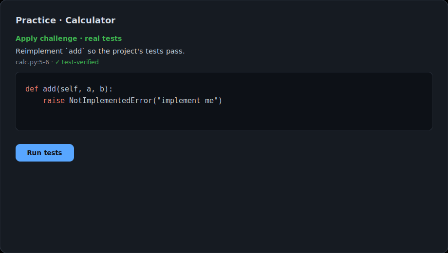
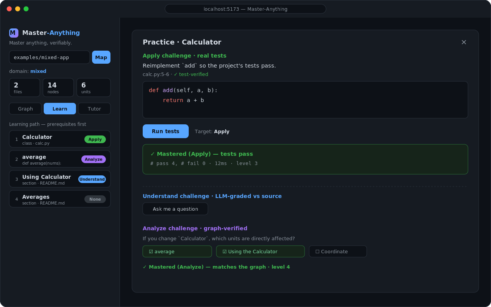
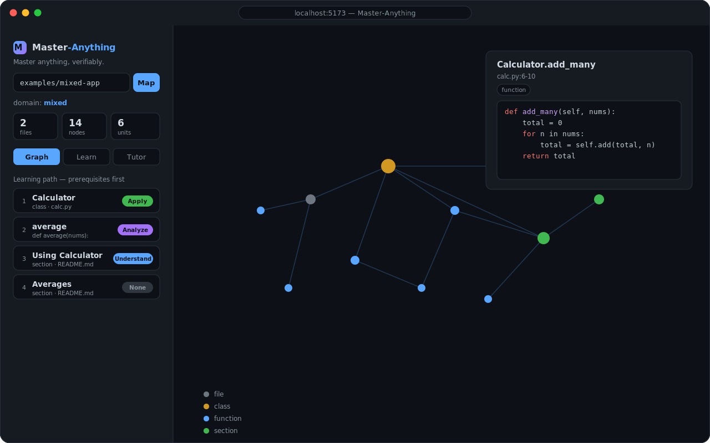
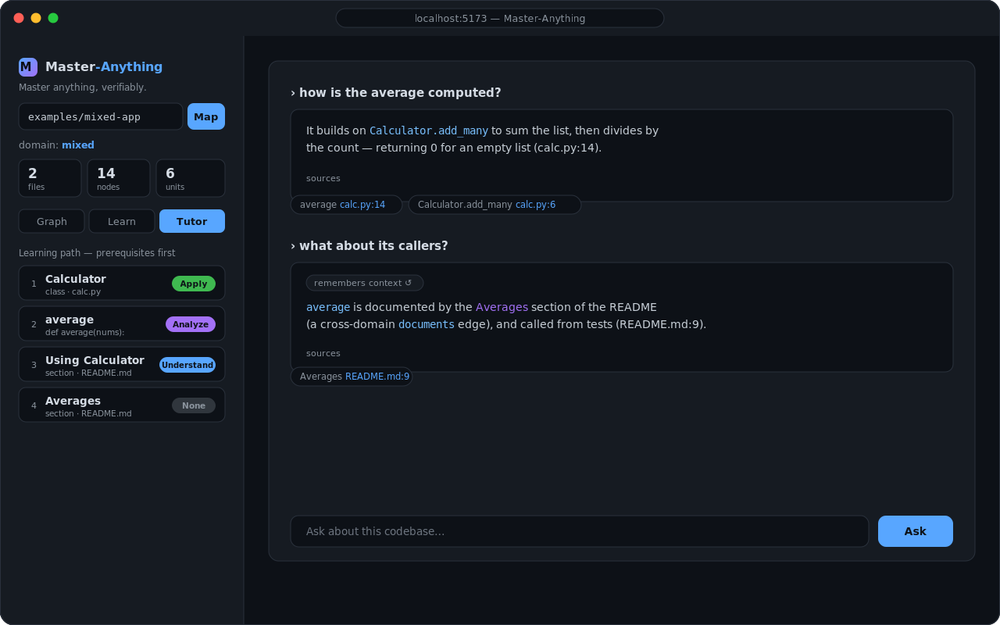

✅
Verifiable mastery
Reimplement a blanked function and the project's actual test suite decides — Python, JavaScript, TypeScript.
Turn any codebase — or docs, PDFs, web pages — into an interactive knowledge graph, then prove you've mastered it with real test execution and graph ground-truth, not an LLM's opinion.
# 1. map a repo into a knowledge graph
connect ./examples/py-calc # tree-sitter + LLM → graph + units
# 2. learn a unit along the Bloom ladder
Understand explain it # LLM grades vs source
Apply reimplement add() # ✓ real pytest decides
Analyze impact of a change # ✓ verified by the graph
# 3. ask the tutor (grounded, cited, multi-turn)
ask "how is the average computed?" # → calc.py:18Practice a unit and watch real tests — and the graph — verify your mastery, live.




Tools that understand a codebase hand you a one-time map. Master-Anything tracks your mastery and pushes it up Bloom's ladder — with an objective check at each step.
Reimplement a blanked function and the project's actual test suite decides — Python, JavaScript, TypeScript.
"Change X → what's affected?" graded against the real call/dependency graph. Objective, not guessed.
Answers cite path:line, with multi-turn memory and optional embedding retrieval.
Code, Markdown, HTML, PDF. Mixed repos merge into one graph with cross-domain edges.
LLM via the Vercel AI SDK (OpenAI / Anthropic / Google / any compatible endpoint). Runs with no key.
SQLite-backed. Only changed files are re-enriched. A shareable artifact lets teammates skip the pipeline.
Every unit progresses along Bloom's taxonomy — and the hard levels are verified.
The tutor asks; an LLM grades your answer against the source.
Reimplement a real function; the test suite passes or fails. Ground truth.
Predict a change's blast radius; checked against the dependency graph.
Adapters differ; the path, mastery, tutor, and assessments are shared.
The top three layers are domain-agnostic — adding a domain means writing one adapter.
pnpm install
python3 -m pip install pytest # for Python Apply tasks
pnpm --filter @ma/server dev # API → http://localhost:8787
pnpm --filter @ma/web dev # web → http://localhost:5173
# open the web app, enter examples/py-calc (or examples/mixed-app)
No API key required — it runs with heuristic summaries and a local test runner. Add MA_LLM_*
to enable the tutor and LLM grading. See the
configuration docs.